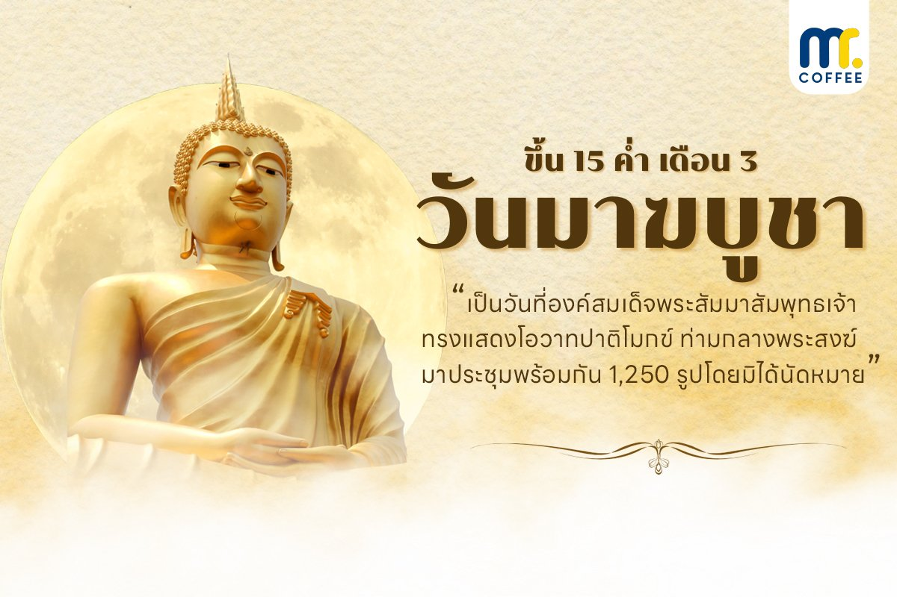

ประวัติและความสำคัญ
วันมาฆบูชา คือวันสำคัญทางพระพุทธศาสนาที่รำลึกถึงเหตุการณ์ในวันเพ็ญ ขึ้น ๑๕ ค่ำ เดือน ๓ ซึ่งเป็นวันที่พระพุทธเจ้าทรงประทาน "โอวาทปาติโมกข์" ท่ามกลางการประชุมของพระสงฆ์ที่เป็นพระอรหันต์ 1,250 รูป เหตุการณ์นี้มีความอัศจรรย์ 4 ประการ จนได้ชื่อว่า "วันจาตุรงคสันนิบาต"
จาตุรงคสันนิบาต: การประชุมอัศจรรย์ 4 ประการ
-
เป็นวันเพ็ญเดือนมาฆะ: พระจันทร์เต็มดวงเสวยมาฆฤกษ์
-
พระสงฆ์ 1,250 รูป มาประชุมพร้อมกัน: โดยมิได้นัดหมาย ณ วัดเวฬุวัน
-
ล้วนเป็นพระอรหันต์: ผู้ได้อภิญญา 6 และสำเร็จเป็นพระอรหันต์แล้วทุกรูป
-
ล้วนเป็นเอหิภิกขุอุปสัมปทา: เป็นผู้ที่พระพุทธเจ้าทรงบวชให้โดยตรง